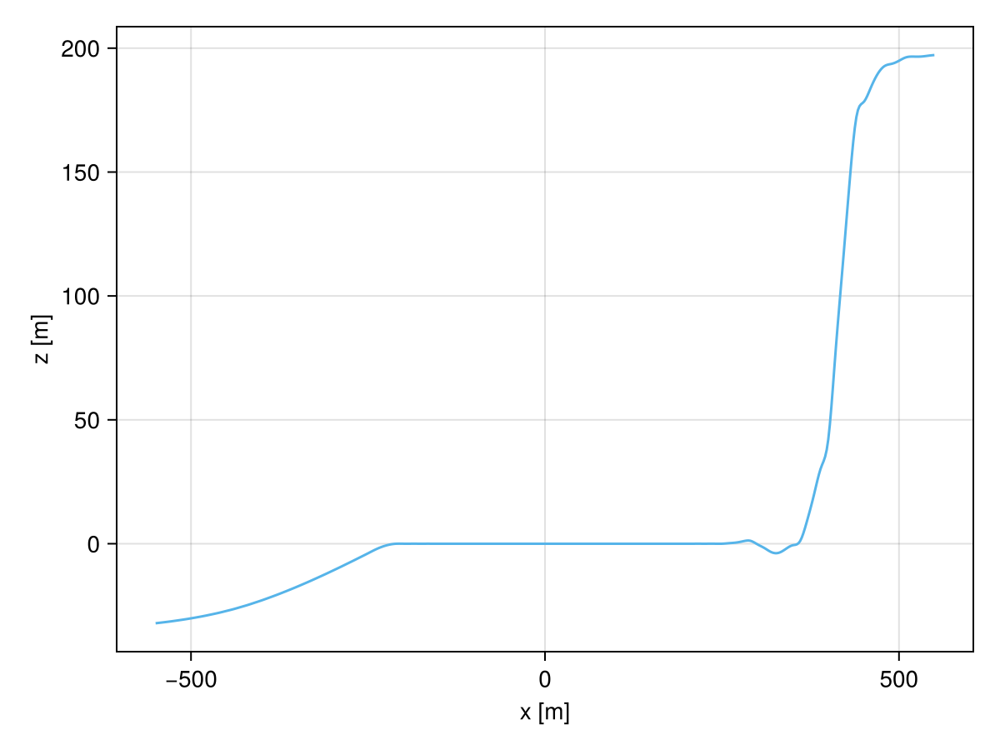
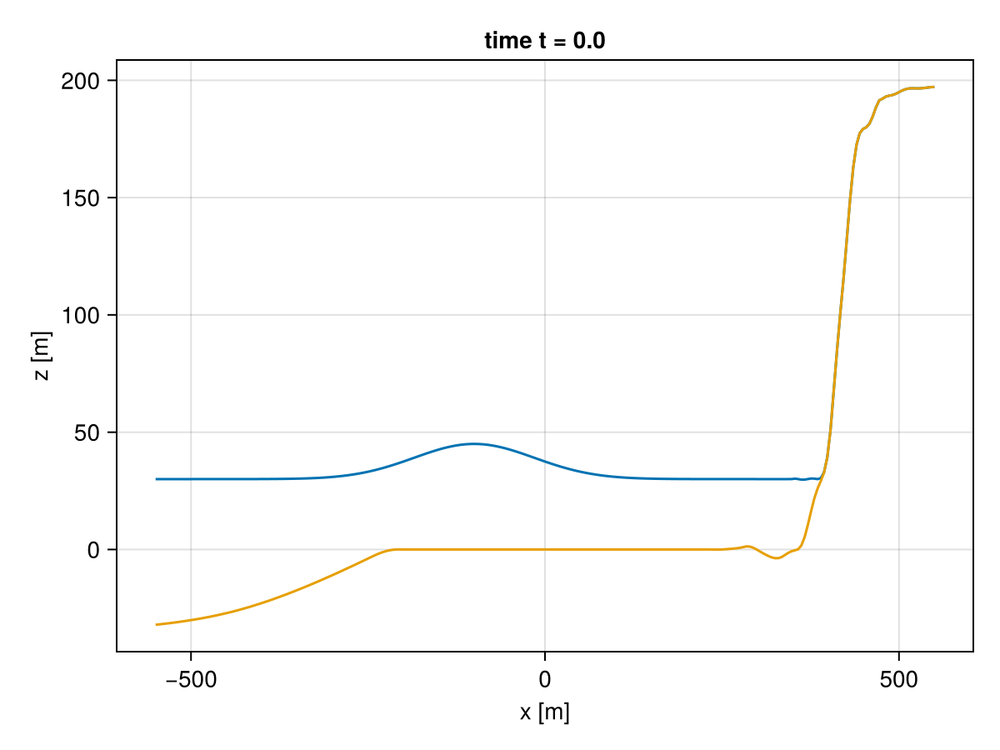
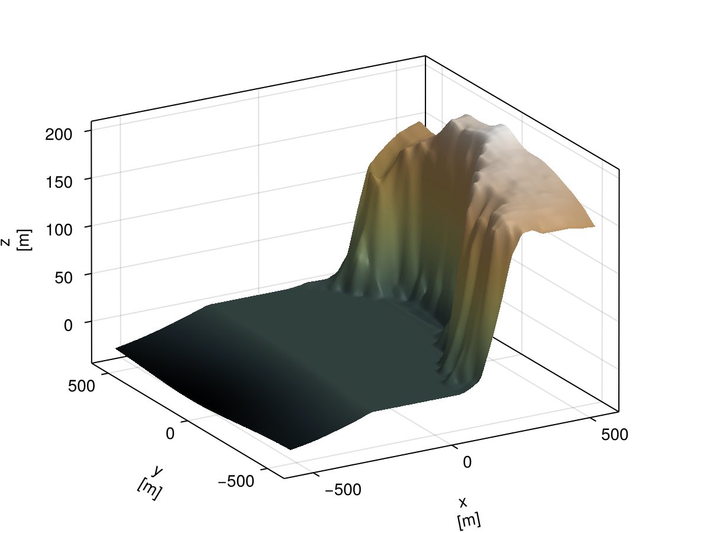

Cliffs of Moher
This section shows two examples that use topography obtained with GeophysicalModelGenerator.jl, as described in Real topography data.
The region is a part of the coastline at the Cliffs of Moher in Ireland. The domain covers the open sea and the cliffs. In both examples a wave travels across the sea and finally runs up the cliffs.
One dimensional wave run-up
The underlying example file can be found here.
First, all the necessary packages must be included at the beginning of the file.
# Include packagesusing TrixiBottomTopographyusing CairoMakieusing OrdinaryDiffEqSSPRKusing Trixiusing TrixiShallowWaterThe one dimensional cut through the topography is shipped with the repository, so it can be loaded directly.
root_dir = pkgdir(TrixiBottomTopography)cliffs_data = joinpath(root_dir, "examples", "data", "cliffs_data_1d_10_x.txt")The data is used to define the B-spline interpolation function as described in B-spline structure and B-spline function. No smoothing is applied here because it would flatten the steep cliff.
const spline_struct = CubicBSpline(cliffs_data; end_condition = "not-a-knot")spline_func(x::Float64) = spline_interpolation(spline_struct, x)spline_func (generic function with 1 method)The interpolated topography can now be plotted.
x_int_pts = Vector(LinRange(spline_struct.x[1], spline_struct.x[end], 500))plot_topography(x_int_pts, spline_func.(x_int_pts); xlabel = "x [m]", ylabel = "z [m]")
The topography is given with respect to sea level. A positive background water height $H_0 = 30$ therefore floods the shallow shelf in front of the cliffs while the cliff face itself stays dry.
equations = ShallowWaterEquations1D(gravity = 9.81, H0 = 30.0)┌──────────────────────────────────────────────────────────────────────────────────────────────────┐
│ ShallowWaterEquations1D │
│ ═══════════════════════ │
│ #variables: ……………………………………………………………… 3 │
│ │ variable 1: ………………………………………………………… h │
│ │ variable 2: ………………………………………………………… h_v │
│ │ variable 3: ………………………………………………………… b │
└──────────────────────────────────────────────────────────────────────────────────────────────────┘At time $t=0$ a smooth Gaussian bump of amplitude $15.0$ is placed on the water surface and is moving towards the cliffs. Its crest sits at $x = -100$, i.e. on the flat shelf where the undisturbed water depth is constant.
Part of the domain is dry, so the undisturbed water depth falls back to the threshold_limiter of the equations there in order to keep the water height h strictly positive.
# Amplitude, crest position and width of the initial waveconst wave_amplitude = 15.0const wave_center = -100.0const wave_width = 120.0# Defining initial condition of a wave which travels towards the cliffsfunction initial_condition_wave(x, t, equations::ShallowWaterEquations1D) b = spline_func(x[1]) # Undisturbed water depth # Note, it is mandatory to shift the water level at dry areas to ensure that the water height # stays positive. The system would not be stable for `h` set to a hard `0` due to division in # the computation of velocity, e.g., (h v) / h. The small dry state threshold has # a default value of 500*eps() ≈ 1e-13 in double precision. h0 = max(equations.H0 - b, equations.threshold_limiter) # Smooth elevation of the water surface on top of it h = h0 + wave_amplitude * exp(-((x[1] - wave_center) / wave_width)^2) # Velocity of a right running simple wave v = 2 * (sqrt(equations.gravity * h) - sqrt(equations.gravity * h0)) return SVector(h, h * v, b)end# Setting initial conditioninitial_condition = initial_condition_wave# Setting the boundary to be a free-slip wallboundary_condition = boundary_condition_slip_wallThe upcoming code components on creating the solver components, mesh, time discretization, etc. will not be covered in full detail. For more information, see the documentation of Trixi.jl and TrixiShallowWater.jl.
volume_flux = (flux_wintermeyer_etal, flux_nonconservative_wintermeyer_etal)surface_flux = (FluxHydrostaticReconstruction(flux_hll_chen_noelle, hydrostatic_reconstruction_chen_noelle), flux_nonconservative_chen_noelle)basis = LobattoLegendreBasis(7)indicator_sc = IndicatorHennemannGassnerShallowWater(equations, basis, alpha_max = 0.5, alpha_min = 0.001, alpha_smooth = true, variable = waterheight_pressure)volume_integral = VolumeIntegralShockCapturingHG(indicator_sc; volume_flux_dg = volume_flux, volume_flux_fv = surface_flux)solver = DGSEM(basis, surface_flux, volume_integral)The mesh spans exactly the interval covered by the topography data.
coordinates_min = spline_struct.x[1]coordinates_max = spline_struct.x[end]mesh = TreeMesh(coordinates_min, coordinates_max, initial_refinement_level = 4, periodicity = false)semi = SemidiscretizationHyperbolic(mesh, equations, initial_condition, solver, boundary_conditions = boundary_condition)tspan = (0.0, 45.0)ode = semidiscretize(semi, tspan)stage_limiter! = PositivityPreservingLimiterShallowWater(variables = (waterheight,))# define equidistant nodes in time for visualization of an animationvisnodes = range(tspan[1], tspan[2], length = 90)sol = solve(ode, SSPRK43(; stage_limiter!), abstol = 1.0e-6, reltol = 1.0e-6, saveat = visnodes)Finally, the solution is animated.
j = Observable(1)time = Observable(0.0)pd_list = [PlotData1D(sol.u[i], semi) for i in 1:length(sol.t)]f = Figure()title_string = lift(t -> "time t = $(round(t, digits=3))", time)ax = Axis(f[1, 1], xlabel = "x [m]", ylabel = "z [m]", title = title_string)height = lift(i -> pd_list[i].data[:, 1], j)bottom = lift(i -> pd_list[i].data[:, 3], j)lines!(ax, pd_list[1].x, height)lines!(ax, pd_list[1].x, bottom)record(f, "animation_cliffs_1d.gif", 1:length(pd_list)) do tt j[] = tt time[] = sol.t[tt]end
Two dimensional wave run-up
The underlying example file can be found here.
The two dimensional example uses the same scenario on the full topography. Since the solution is post-processed with Trixi2Vtk.jl instead of Makie.jl, that package is loaded as well.
# Include packagesusing TrixiBottomTopographyusing CairoMakieusing OrdinaryDiffEqSSPRKusing Trixiusing Trixi2Vtkusing TrixiShallowWaterThe two dimensional data is interpolated with a bicubic B-spline.
root_dir = pkgdir(TrixiBottomTopography)cliffs_data = joinpath(root_dir, "examples", "data", "cliffs_data_2d_10.txt")const spline_struct = BicubicBSpline(cliffs_data; end_condition = "not-a-knot")spline_func(x::Float64, y::Float64) = spline_interpolation(spline_struct, x, y)spline_func (generic function with 1 method)Let's create a three dimensional visualization of the coastline.
n = 200x_int_pts = Vector(LinRange(spline_struct.x[1], spline_struct.x[end], n))y_int_pts = Vector(LinRange(spline_struct.y[1], spline_struct.y[end], n))z_int_pts = evaluate_two_dimensional_interpolant(spline_func, x_int_pts, y_int_pts)plot_topography(x_int_pts, y_int_pts, permutedims(z_int_pts); xlabel = "x\n [m]", ylabel = "y\n [m]", zlabel = "z\n [m]", azimuth_angle = -120 * pi / 180, elevation_angle = 20 * pi / 180)
The equations and the initial condition are the direct two dimensional analogue of the one dimensional case above. Since the elevation only depends on x[1], the initial wave is a straight crest parallel to the coastline that travels towards the cliffs.
equations = ShallowWaterEquations2D(gravity = 9.81, H0 = 30.0)# Amplitude, crest position and width of the initial waveconst wave_amplitude = 15.0const wave_center = -100.0const wave_width = 120.0function initial_condition_wave(x, t, equations::ShallowWaterEquations2D) b = spline_func(x[1], x[2]) # Undisturbed water depth # Note, it is mandatory to shift the water level at dry areas to ensure that the water height # stays positive. The system would not be stable for `h` set to a hard `0` due to division in # the computation of velocity, e.g., (h v) / h. The small dry state threshold has # a default value of 500*eps() ≈ 1e-13 in double precision. h0 = max(equations.H0 - b, equations.threshold_limiter) # Smooth elevation of the water surface on top of it h = h0 + wave_amplitude * exp(-((x[1] - wave_center) / wave_width)^2) # Velocity of a right running simple wave v1 = 2 * (sqrt(equations.gravity * h) - sqrt(equations.gravity * h0)) v2 = 0.0 return SVector(h, h * v1, h * v2, b)endinitial_condition = initial_condition_waveboundary_condition = boundary_condition_slip_wallThe approximation space is set up in the same way as in the one dimensional case.
volume_flux = (flux_wintermeyer_etal, flux_nonconservative_wintermeyer_etal)surface_flux = (FluxHydrostaticReconstruction(flux_hll_chen_noelle, hydrostatic_reconstruction_chen_noelle), flux_nonconservative_chen_noelle)basis = LobattoLegendreBasis(7)indicator_sc = IndicatorHennemannGassnerShallowWater(equations, basis, alpha_max = 0.5, alpha_min = 0.001, alpha_smooth = true, variable = waterheight_pressure)volume_integral = VolumeIntegralShockCapturingHG(indicator_sc; volume_flux_dg = volume_flux, volume_flux_fv = surface_flux)solver = DGSEM(basis, surface_flux, volume_integral)Here a P4estMesh is used instead of a TreeMesh because it supports the non-conforming adaptive mesh refinement that resolves the moving wave front.
coordinates_min = (spline_struct.x[1], spline_struct.y[1])coordinates_max = (spline_struct.x[end], spline_struct.y[end])mesh = P4estMesh((1, 1); polydeg = 1, coordinates_min = coordinates_min, coordinates_max = coordinates_max, initial_refinement_level = 3, periodicity = false)semi = SemidiscretizationHyperbolic(mesh, equations, initial_condition, solver, boundary_conditions = boundary_condition)tspan = (0.0, 45.0)ode = semidiscretize(semi, tspan)The solution is written to an output directory from which it is later converted to VTK files. The positivity limiter is passed both to the AMR callback, so that it is applied after every mesh adaptation, and to the time integration method.
output_dir = mktempdir()stage_limiter! = PositivityPreservingLimiterShallowWater(variables = (waterheight,))amr_indicator = IndicatorLöhner(semi, variable = first)amr_controller = ControllerThreeLevel(semi, amr_indicator, base_level = 3, med_level = 4, med_threshold = 0.1, max_level = 5, max_threshold = 0.5)amr_callback = AMRCallback(semi, amr_controller, interval = 1, adapt_initial_condition = true, adapt_initial_condition_only_refine = true, limiter! = stage_limiter!)stepsize_callback = StepsizeCallback(cfl = 0.2)save_solution = SaveSolutionCallback(dt = 0.5, save_initial_solution = true, save_final_solution = true, output_directory = output_dir, solution_variables = cons2prim)callbacks = CallbackSet(amr_callback, stepsize_callback, save_solution)sol = solve(ode, SSPRK43(; stage_limiter!); dt = 1.0, adaptive = false, callback = callbacks)Finally, the Trixi.jl output files are post-processed with Trixi2Vtk.jl.
trixi2vtk(joinpath(output_dir, "solution_*.h5"), output_directory = output_dir)
Converting .h5 to .vtu... 2%|▉ | ETA: 0:05:04
finished: ../../../../../../../tmp/jl_7w4xUK/solution_000000025.h5
Converting .h5 to .vtu... 25%|██████████▏ | ETA: 0:00:25
finished: ../../../../../../../tmp/jl_7w4xUK/solution_000001060.h5
Converting .h5 to .vtu... 38%|███████████████▍ | ETA: 0:00:15
finished: ../../../../../../../tmp/jl_7w4xUK/solution_000001564.h5
Converting .h5 to .vtu... 48%|███████████████████▍ | ETA: 0:00:10
finished: ../../../../../../../tmp/jl_7w4xUK/solution_000001908.h5
Converting .h5 to .vtu... 57%|██████████████████████▉ | ETA: 0:00:08
finished: ../../../../../../../tmp/jl_7w4xUK/solution_000002216.h5
Converting .h5 to .vtu... 66%|██████████████████████████▍ | ETA: 0:00:06
finished: ../../../../../../../tmp/jl_7w4xUK/solution_000002521.h5
Converting .h5 to .vtu... 75%|█████████████████████████████▉ | ETA: 0:00:04
finished: ../../../../../../../tmp/jl_7w4xUK/solution_000002840.h5
Converting .h5 to .vtu... 84%|█████████████████████████████████▍ | ETA: 0:00:02
finished: ../../../../../../../tmp/jl_7w4xUK/solution_000003179.h5
Converting .h5 to .vtu... 92%|████████████████████████████████████▉ | ETA: 0:00:01
finished: ../../../../../../../tmp/jl_7w4xUK/solution_000003471.h5
Converting .h5 to .vtu... 100%|████████████████████████████████████████| Time: 0:00:12
finished: ../../../../../../../tmp/jl_7w4xUK/solution_000003765.h5
────────────────────────────────────────────────────────────────────────────────────────────────────────────────
Time Allocations
──────────────────────────────── ──────────────────────────────────
Tot / % measured: 13.4s / 61.7% 2.86GiB / 87.7%
────────────────────────────────────── ──────────────────────────────── ──────────────────────────────────
Section ncalls time %tot avg alloc %tot avg
────────────────────────────────────────────────────────────────────────────────────────────────────────────────
add data to VTK file 91 1.98s 24.1% 21.8ms █▉ 417MiB 16.2% 4.58MiB █▎
├─ H 91 534ms 6.5% 5.86ms ▌ 70.3MiB 2.7% 791KiB ▎
├─ v1 91 334ms 4.0% 3.67ms ▍ 69.1MiB 2.7% 777KiB ▎
├─ b 91 315ms 3.8% 3.46ms ▎ 75.5MiB 2.9% 849KiB ▎
├─ v2 91 304ms 3.7% 3.34ms ▎ 53.2MiB 2.1% 599KiB ▏
├─ add data to VTK file 91 30.1ms 0.4% 330μs 79.6MiB 3.1% 895KiB ▎
│ ├─ element_ids 91 14.5ms 0.2% 160μs 26.7MiB 1.0% 300KiB ▏
│ ├─ levels 91 10.6ms 0.1% 117μs 26.4MiB 1.0% 298KiB ▏
│ └─ tree_ids 91 4.66ms 0.1% 51.2μs 26.4MiB 1.0% 298KiB ▏
├─ indicator_amr 91 19.8ms 0.2% 217μs 26.4MiB 1.0% 298KiB ▏
└─ indicator_shock_capturing 91 4.98ms 0.1% 54.7μs 26.4MiB 1.0% 298KiB ▏
build VTK grid (node data) 91 1.89s 22.9% 20.7ms █▉ 835MiB 32.5% 9.17MiB ██▋
build VTK grid (cell data) 91 1.87s 22.6% 20.5ms █▊ 834MiB 32.5% 9.17MiB ██▋
read mesh 91 1.21s 14.7% 13.3ms █▏ 46.9MiB 1.8% 528KiB ▏
read data 91 601ms 7.3% 6.60ms ▋ 132MiB 5.1% 1.45MiB ▍
interpolate data 91 495ms 6.0% 5.44ms ▌ 146MiB 5.7% 1.61MiB ▌
save VTK file 182 93.5ms 1.1% 514μs ▏ 2.19MiB 0.1% 12.3KiB
add VTK to PVD file 91 27.5ms 0.3% 302μs 1.38MiB 0.1% 15.5KiB
prepare VTK cells (node data) 91 26.3ms 0.3% 289μs 47.5MiB 1.8% 534KiB ▏
prepare VTK cells (cell data) 91 25.9ms 0.3% 285μs 47.5MiB 1.8% 534KiB ▏
prepare coordinate information 91 25.5ms 0.3% 280μs 58.2MiB 2.3% 655KiB ▏
save PVD files 2 787μs 0.0% 393μs 1.59KiB 0.0% 816B
open PVD file 1 157μs 0.0% 157μs 2.84KiB 0.0% 2.84KiB
────────────────────────────────────────────────────────────────────────────────────────────────────────────────It is possible to open the created solution_00000.pvd file with ParaView and create a video of the simulation. In ParaView, one can apply two instances of the Warp By Scalar filter to visualize the water height and the bathymetry in three dimensions. Many additional customizations, e.g., color scaling and fonts, are available there.
Below is a video of the Cliffs of Moher runup simulation.